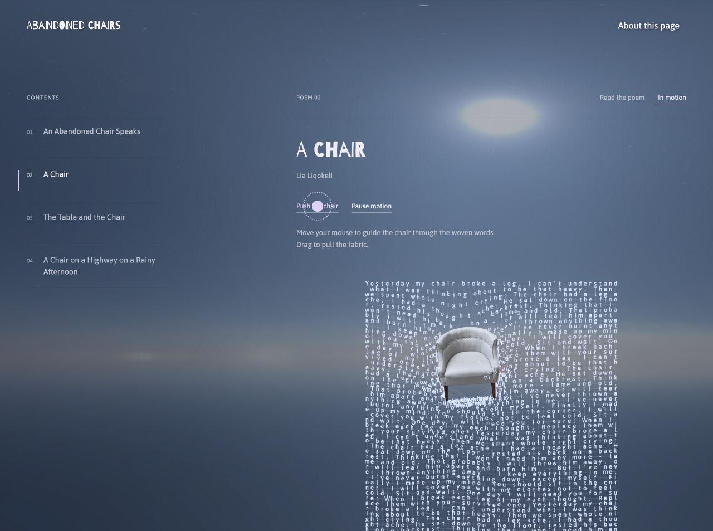

Abandoned Chairs
About Abandoned Chairs
I keep wondering about the people who sat in the chairs I see on New York sidewalks. Who owned them, and why were they left outside? This project collects photographs of abandoned chairs and gives them imagined stories and poems told from their point of view.
Description
Photographs open into stories, while the poetry section lets visitors move a chair through words or scatter letters across the screen. A shared map records chairs found on the street, with Street View showing where each one was left. Visitors can add the chairs they find to the map.
